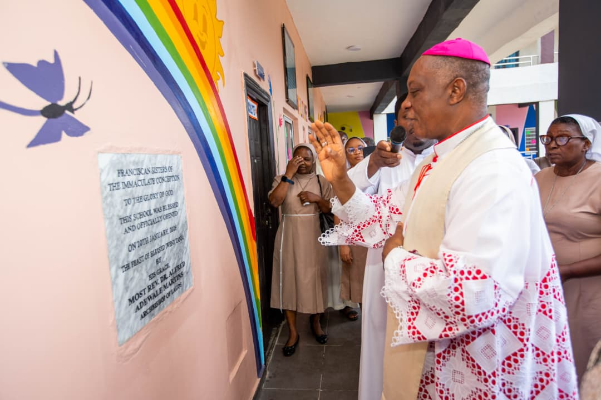
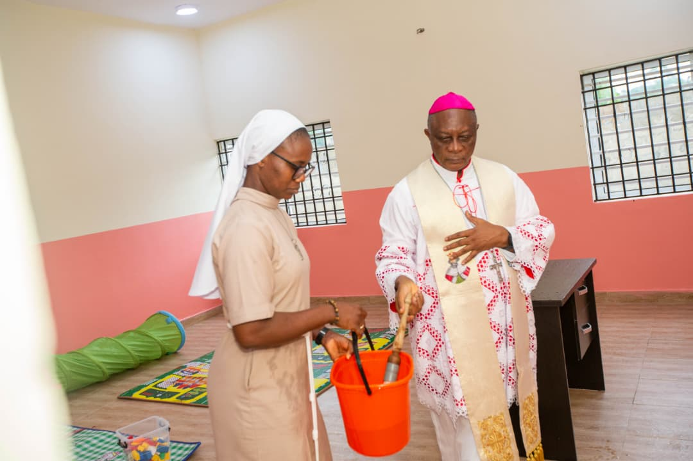
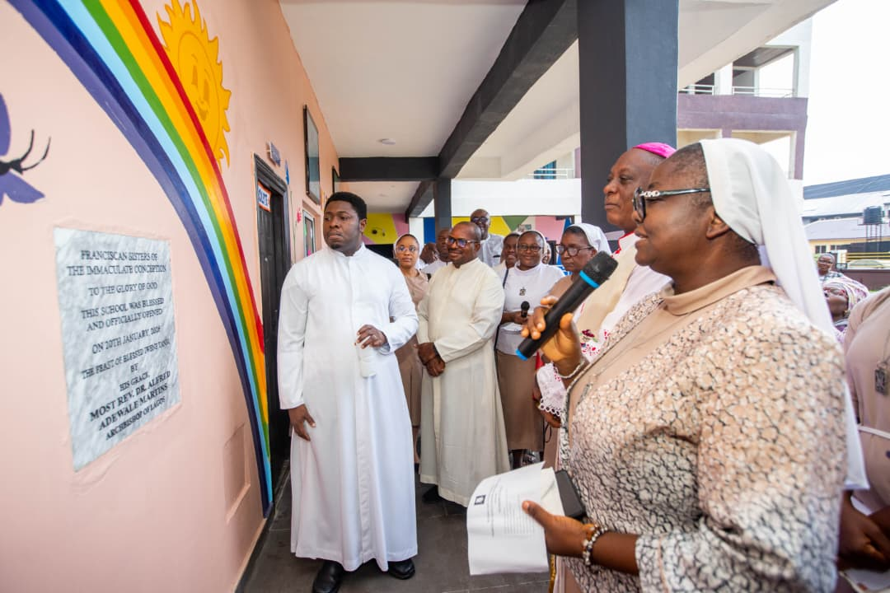
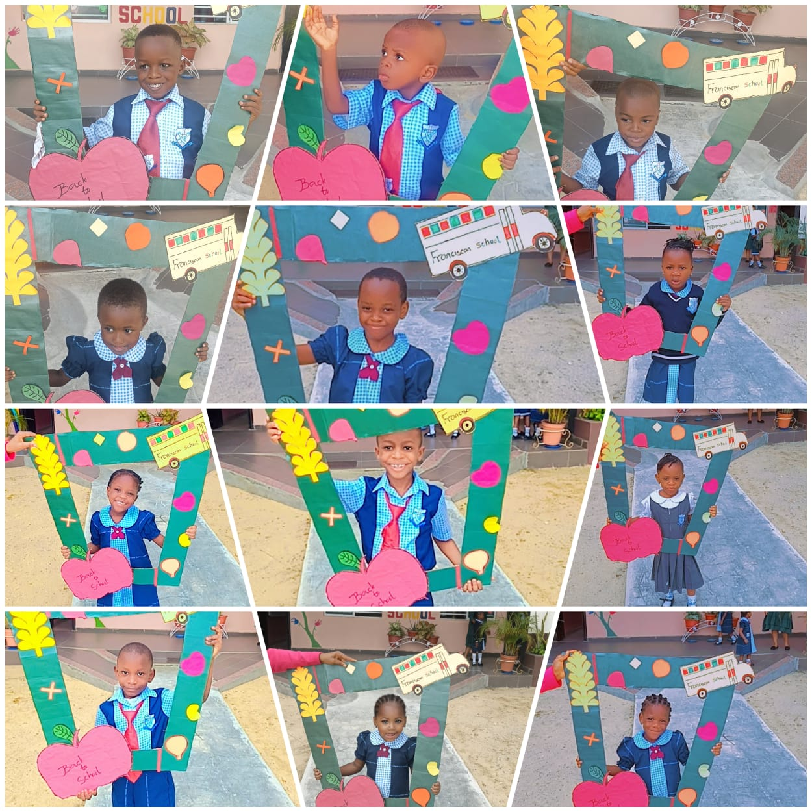
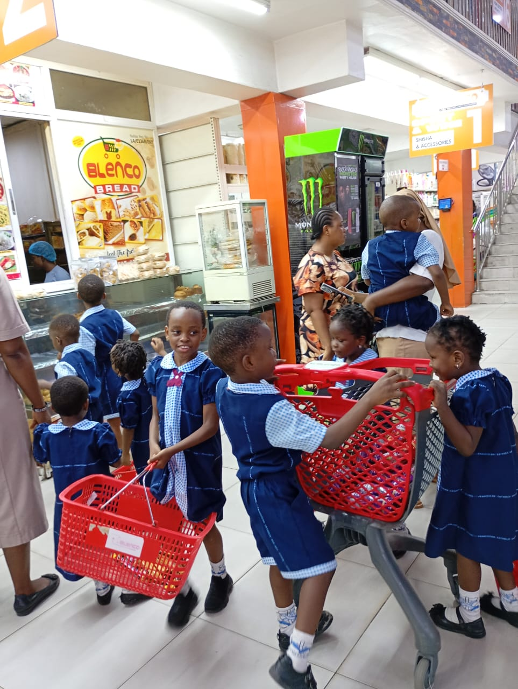
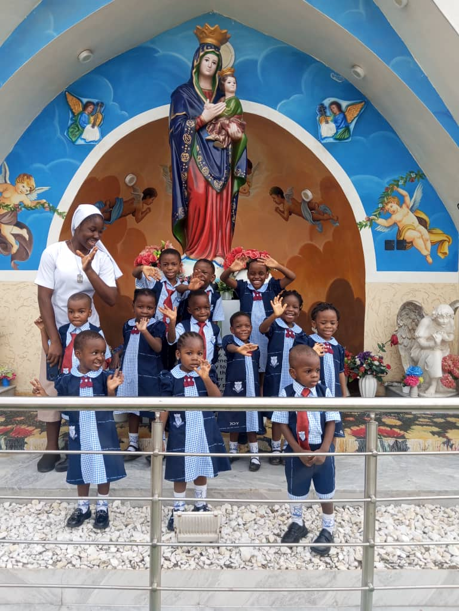

1
2
3
...
8







Join us as we celebrate our wonderful children on Nigeria's Children's Day! A fun-filled day of games, performances, and activities specially planned for our learners. Parents and guardians are warmly invited to share in the joy.
The school was officially opened and blessed by His Grace, Alfred Adewale Martins, the Archbishop of the Metropolitan See of Lagos, marking the beginning of a new chapter in Catholic education.
His Grace prayed over the school and blessed the premises, the staff, and the learners, committing the school into God's hands at its founding.
His Grace went through each classroom, blessing the learning spaces and dedicating them for the education and formation of the children.
Rev. Sr. Victoria Mary Ogunwande OSF delivered an inspiring opening address, sharing the vision and mission of the school with all those gathered.
Learners returned with excitement and energy for the new term. Staff and students reunited for another season of learning, growth, and fun.
Learners explored local markets as part of a real-world learning experience, developing social skills and an understanding of everyday community life.
Learners visited the grotto for a time of prayer and reflection, deepening their faith and connection to the Franciscan spiritual tradition.
Do you have photos from school events or activities? We'd love to include them in our gallery! Submit your photos to help us document the wonderful moments at Franciscan Catholic School.